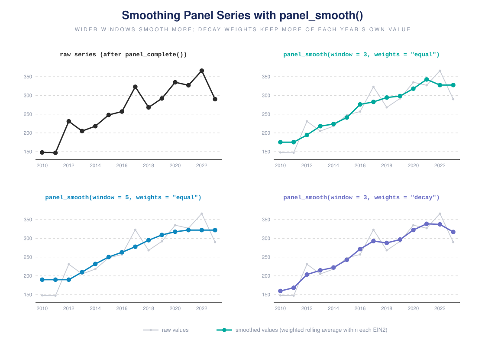

Smoothing panel variables
smoothing-panels.Rmdpanel_smooth() replaces a numeric field with a rolling weighted average taken within each organization, ordered by year. It dampens year-to-year noise (reporting quirks, one-off spikes) while leaving the rows in place.
A single organization with a one-year spike:
df <- data.frame(
EIN2 = "A",
TAX_YEAR = 2016:2022,
revenue = c(10, 12, 11, 50, 13, 12, 11) # spike in 2019
)Window and weights
window is the (odd) number of years averaged; weights decides how much each year in the window counts:
-
equal– a plain moving average; every year in the window counts the same. -
half– the focal year gets half the weight, the neighbours share the other half. -
decay– weight falls by half per year of distance (0.5^distance).

panel_smooth() applied with different window and weights settings, compared against the raw series
w <- function(wt) panel_smooth(df, "revenue", window = 3, weights = wt,
verbose = FALSE)$revenue
data.frame(
year = df$TAX_YEAR,
raw = df$revenue,
equal = round(w("equal"), 1),
half = round(w("half"), 1),
decay = round(w("decay"), 1)
)
#> year raw equal half decay
#> 1 2016 10 11.0 10.8 10.7
#> 2 2017 12 11.0 11.2 11.2
#> 3 2018 11 24.3 21.0 21.0
#> 4 2019 50 24.7 31.0 31.0
#> 5 2020 13 25.0 22.0 22.0
#> 6 2021 12 12.0 12.0 12.0
#> 7 2022 11 12.0 11.8 11.6Notice 2019: equal pulls the spike down hardest (it treats the neighbours and the spike alike), while half and decay keep more of the focal value. (For a centred width-3 window half and decay give identical weights; they differ at the series edges, where the window is off-centre, and more visibly from window = 5 on, where decay down-weights distant years more steeply.)
A wider window smooths more aggressively:
data.frame(
year = df$TAX_YEAR,
w3 = round(panel_smooth(df, "revenue", window = 3, verbose = FALSE)$revenue, 1),
w5 = round(panel_smooth(df, "revenue", window = 5, verbose = FALSE)$revenue, 1)
)
#> year w3 w5
#> 1 2016 11.0 19.2
#> 2 2017 11.0 19.2
#> 3 2018 24.3 19.2
#> 4 2019 24.7 19.6
#> 5 2020 25.0 19.4
#> 6 2021 12.0 19.4
#> 7 2022 12.0 19.4Edges, gaps, and multiple series
At the ends of a series the fixed-width window slides inward rather than shrinking, and organizations with fewer years than window use a smaller effective window. Missing values (NA/NaN) are dropped from each window and the remaining weights are renormalized, so a stray gap does not blank out its neighbours; a window with nothing observed returns NA.
panel_smooth() handles many organizations and several fields at once, always smoothing each organization independently and returning the rows in their original order:
panel <- data.frame(
EIN2 = rep(c("A", "B"), each = 4),
TAX_YEAR = rep(2019:2022, 2),
revenue = c(100, 300, 200, 400, 50, 40, 90, 60),
expenses = c(90, 250, 180, 350, 45, 35, 80, 55)
)
head(panel_smooth(panel, vars = c("revenue", "expenses"),
window = 3, verbose = FALSE), 4)
#> EIN2 TAX_YEAR revenue expenses
#> 1 A 2019 200 173.3333
#> 2 A 2020 200 173.3333
#> 3 A 2021 300 260.0000
#> 4 A 2022 300 260.0000Smoothing changes values but never the shape of the data – same rows, same order, selected columns replaced by their smoothed versions.